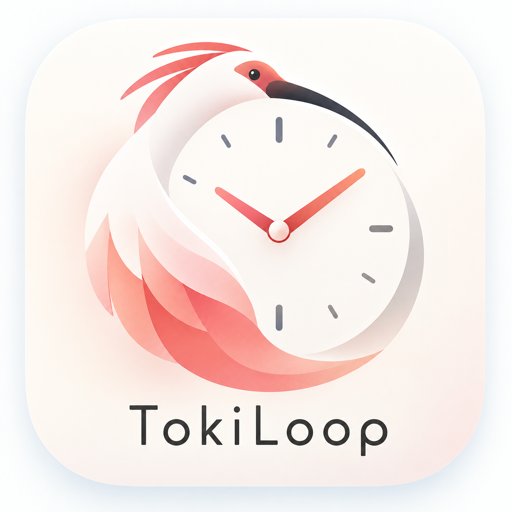

TokiLoop
24時間ルーティン
目標・24時間スケジュール・ToDo・ポモドーロ・移動時間をひとつに。Garminの時計からも操作できるAndroidアプリです。
開くたびに、長期・中期・短期の目標が目に入る
1日を24時間の円で組み立て、平日・休日などのパターンを使い分ける
時刻つきのToDoと定型タスク、親子のToDo、ポモドーロで集中した時間を記録
家を出る時刻まで逆算し、乗換アプリをそのまま開ける
データは端末の中だけに保存。アカウント登録は不要
プライバシーポリシー
サポート・お問い合わせ
Google Playで近日公開予定です。